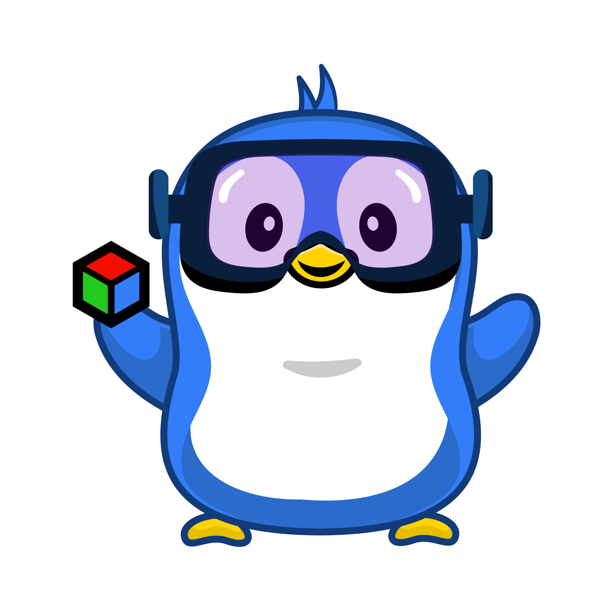

Prototype in PyTorch. Deploy in Rust.
Same geometry, same maintainers.
Kornia maintains both halves of the vision stack: a differentiable library with millions of installs a month for research, and a Rust toolchain — sensor-rt, vision-rt, kornia-rs, kornia-slam, bubbaloop — that drives cameras, runs TensorRT inference, and estimates pose on a Jetson or a Raspberry Pi with no Python runtime on the device.
pip install kornia

One stack, camera to agent
Each layer is a separate open-source library. Take the whole stack, or take one piece.
bubbaloop
Agent runtime. One binary per device, with fleet telemetry, memory and tools.
kornia-slam
Spatial runtime. Where am I, and what does the space look like.
vision-rt
Neural inference. What is in the frame — TensorRT on Jetson Orin.
kornia-rs
Geometry and image kernels. The math, in Rust, on CPU SIMD and CUDA.
sensor-rt
Sensors. Cameras, stereo and IMU, zero-copy to the GPU.
kornia (PyTorch)
The research bench. The same geometry, written to be differentiated.
Most computer vision work dies in the gap between the notebook and the machine. You prototype in Python with autograd and a GPU workstation, then rewrite it — once, under deadline — for a device with 8 GB of RAM and no Python. Kornia maintains both ends, and every layer is usable on its own.
Our Projects
Six open-source libraries, from sensor drivers to an agent runtime.
Kornia stable
PyTorch • Differentiable visionKornia adds differentiable geometry to PyTorch: camera models, epipolar geometry, homographies, feature detection and matching, and image and augmentation operators that gradients flow through. For researchers and ML engineers who need geometric operations inside the training loop rather than beside it.
kornia-rs beta
Rust • Image and 3D kernelskornia-rs implements low-level 2D and 3D vision in Rust — image I/O and colour conversion, warps and resampling, camera models, feature matching — with CPU SIMD and CUDA backends and no Python in the hot path. For engineers putting vision on hardware where a Python interpreter is not an option, and for Rust developers who would otherwise bind to OpenCV.
Bubbaloop early
Rust • Hardware AI agentBubbaloop is a single Rust binary that turns a Jetson, a Raspberry Pi, or any Linux box into a hardware AI agent: it drives the cameras and sensors, streams real-time telemetry, and gives an AI agent the memory and tools to act on what the device sees. For people operating robots, camera fleets or IoT hardware who want one binary to deploy instead of a container stack per site.
kornia-slam early
Rust • Spatial runtimekornia-slam estimates camera pose in real time, builds a reusable map of the space, and exposes both to the software that needs to know where it is. For robotics and spatial-AI developers who want SLAM as a library they call from their own process, not a graph of nodes they have to adopt wholesale.
vision-rt early
Rust • TensorRT on Jetson Orinvision-rt runs neural vision models — detection, keypoints, depth, re-identification — on NVIDIA Jetson Orin through TensorRT, driven from Rust, at real-time frame rates. For engineers deploying perception on Orin who need TensorRT throughput without a Python inference server in the loop.
sensor-rt early
Rust • Sensor driverssensor-rt is the driver layer underneath the rest: RTSP and NVMM camera capture, OAK-D stereo and IMU, delivering frames as buffers the GPU can use without a copy. For anyone wiring real sensors into a Rust vision pipeline on Jetson instead of shelling out to GStreamer.
Also maintained: tutorials and examples notebooks, limbus async AI pipelines, and dora-nodes-hub for the dora-rs framework.
Build Kornia with us
347 people have shipped code to Kornia, and 121 pull requests were merged in the last 90 days — most of them the same day they were opened. Here is where to start.
First contribution
Small, self-contained, reviewed quickly. Docs fixes, test coverage, error messages and missing operators. Read the contributor guide and the AI & Authorship Policy first — we require a pasted test log and a reference implementation with every PR, and we would rather tell you now than in review.
Library & systems developer
Rust, CUDA and edge runtime. Image ops, linear algebra, camera geometry and Jetson deployment in kornia-rs. These are real gaps in the roadmap, not busywork.
Researcher
Bring a paper into a differentiable, production computer vision library and put it in front of thousands of downstream projects. Propose it in Discussions before you write code — we will help you scope it.
Get mentored
Kornia has mentored students through Google Summer of Code in 2025 and 2026, and we mentor outside the programme too. If you want to spend a summer — or a semester — going deep on differentiable CV, Rust image processing or edge deployment, we will pair you with a maintainer.
Not writing code? Reviewing a pull request, reproducing a bug, or answering one question in Discord is worth as much. Maintainer review is our scarcest resource — if you want to help most, help us review.
Sponsor Kornia
Kornia is free and always will be. Sponsorship pays for the maintenance that keeps it that way.
Monthly releases
Regular, tested releases across the Python and Rust projects instead of whenever someone finds an evening.
Real hardware testing
Jetson and edge builds verified on actual devices before they ship, not just in CI.
Faster review
Maintainer review is our bottleneck. Funding buys dependable review time for the people contributing code.
Donations made through Open Collective are held by Open Source Collective, which can issue invoices and receipts for company purchasing. Every transaction is public.
Our backers
Thank you to everyone funding this work. Sponsor logos are placed here.
- Google Summer of Code
- Hassan Abu Alhaija
- Gabriele Berton
- Duc Nguyen
- pixray
- zhaoguangyuan123
- Edgar Riba Pi
Join Our Community
Connect with researchers, developers and companies building computer vision in the open.
Latest News & Updates
Releases, talks and milestones across the Kornia ecosystem
Programmes & Collaborations
Programmes we take part in and projects we build alongside.


About Kornia
Kornia is a non-profit organisation dedicated to advancing spatial artificial intelligence through open collaboration. Founded in 2018 and registered as a non-profit in 2023, it is supported by an international community of contributors driving work in computer vision.
Open source first
Kornia projects are developed in the open under permissive licences, free for anyone to use, modify and build on.
Global community
347 people have contributed code to the Kornia library, from research labs and companies around the world.
Research to hardware
The same geometry, maintained from the training loop through to a robot running on an 8 GB board.